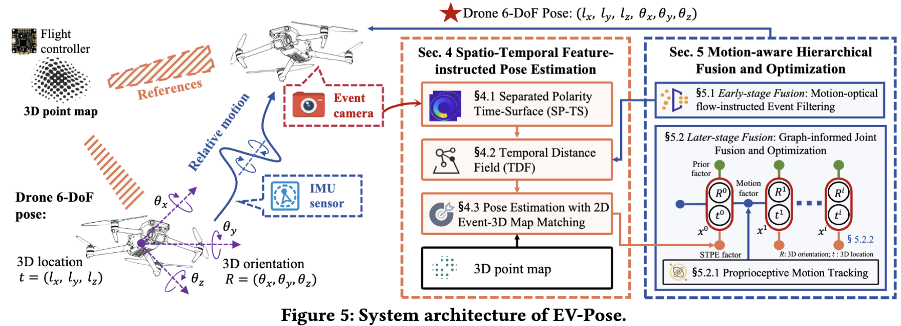

Event cameras are bio-inspired sensors that differ from traditional frame cameras. Specifically, frame cameras capture synchronous images with a global shutter at fixed time intervals, while output of an event camera is event streams with $ms$-level resolution, as shown in Fig. (a). Each pixel in an event camera independently responds to changes in brightness asynchronously. Each event \( e = (\boldsymbol{x}, i, p) \) represents a pixel at location \(\boldsymbol{x} = (u, v)\) has undergone a predefined magnitude change in brightness at a time \( i \), as shown in Fig. (b). \( p \) is polarity of intensity change, which is 'ON' for brighter and 'OFF' for darker.
(a) Current VPS uses an RGB camera, an IMU, and 3D point clouds for pose estimation.
(b) EV-Pose leverages event cameras for accurate and low-latency 6-DoF drone pose tracking.
From a top-level perspective, we design EV-Pose, an event-based 6-DoF pose tracking system for drones that redesign current VPS with event camera. EV-Pose leverages prior 3D point maps and temporal consistency between event camera and IMU to achieve accurate, low-latency drone 6-DoF pose tracking.
(i) Feature-instructed Pose Estimation (STPE) module (§ 4). This module first introduces the concept of a separated polarity time-surface, a novel spatio-temporal representation for event streams (§4.1). Subsequently, it leverages the temporal relationships among events encoded in the time-surface to generate a distance field, which is then used as a feature representation for the event stream (§4.2). Finally, the 2D Event-3D Point Map Matching module models the drone pose estimation problem, which aligns the event stream's distance field feature with the 3D point map, thus facilitating absolute pose estimation of the drone (§4.3).
(ii) Motion-aware Hierarchical Fusion and Optimization (MHFO) scheme (§5). This scheme first introduces motion-optical flow-instructed event filtering (§5.1), which combines drone motion information with structural data from the 3D point map to predict event polarity and perform fine-grained event filtering. This approach fuses event camera with IMU at the early stage of raw data processing, significantly reducing the number of events during matching. By utilizing proprioceptive motion tracking to infer the drone's relative motion (§5.2), this scheme introduces a joint fusion and optimization module (§5.3), based on a factor graph, which treats relative motion as proprioceptive measurements and integrates them with the exteroceptive measurements from the STPF module. This fusion, performed at the later stage of pose estimation, yields optimized 6-DoF poses.
Relationship between STPE and MHFO. STPE extracts a temporal distance field feature from the event stream and aligns it with a prior 3D point map to facilitate map-based drone pose estimation. To further enhance the efficiency and accuracy of this estimation, EV-Pose incorporates MHFO, which leverages drone motion information for early-stage event filtering—reducing the number of events involved in matching—and later-stage pose optimization, recovering the scale and producing a 6-DoF trajectory with minimal drift.
